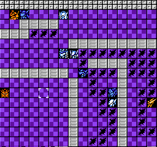
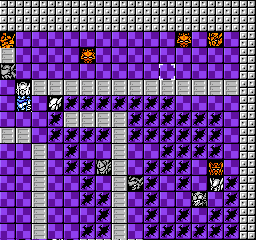
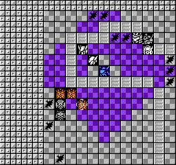

第八关
这关最大的特点就是堵路口了，关于堵路口的规则，后面再分析。
开局一路向上跑吧，但是请至少打死两个小兵，不然增援不满的。
无干扰，无爱心。
如图，此时我所有机体，除了妖精没血，其他都有满血，精神仅仅白骑士用了一个闪避。

无论是主动攻击，还是使用狂怒，还是进入古铁右边一格，阿拉德上面一格的位置，都会触发救人的剧情。弓天使和亡灵热血用来秒两台怒风，古铁 加速进去，强攻打死一台，剩下一台就无惧了。下一步就是堵路口，其实本图的位置中白骑士能够再向后一步就更好了，不过这样也能打，只是麻烦点。

利用空型的隆盛回血和保住堵路口的棋子。因为上文说的白骑士位置不好，导致右边的敌人会出来两个，利用隆盛强攻双击消灭掉，这时候妖精必须用一个闪避，一回合连续两次SL出70%闪避实在太难。

接下来就简单了，利用两台回血机慢慢磨死人吧。
关于堵路口，分成两种情况。
1
敌人无限移动格数，都无法贴身你的机体，这样地方不会主动进攻，至多前后左右移动一格或者干脆不动，这是最基本的堵路口。
2
多障碍地形中，敌方绕过障碍有多重路线，有长有短。此时若最短路线上，给予地方无限移动格数也无法贴身，敌方依然被堵住。至于长线路和段线路的差额达到多大才能堵得住路口，不详。本图就是典型，明明下方可以绕圈过来，敌人在默认选择最短路线的情况下，就被堵住了。截图不完整，其实在接近左下角的位置还有个小兵，我是派部队向下绕过去打的，当我接近到下面路线较短的时候，左下角不动的小兵也主动向右走了。
这种堵路口还有一个典型就是在蓝月1中的激战关（逃脱之前一关），曾经有人发过堵路口的攻略，也是利用这种长短路线的方式。
顺便说一下，障碍物也可以是水地形，这种情况我遇到过几次了，不过很难把握。